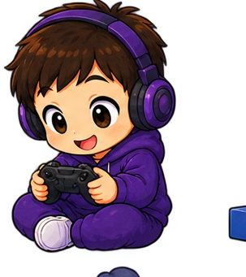
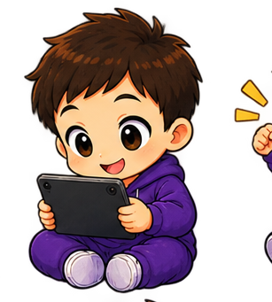
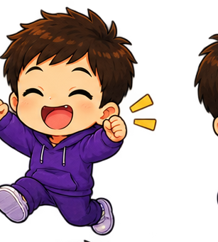
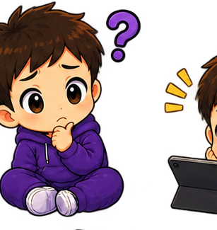
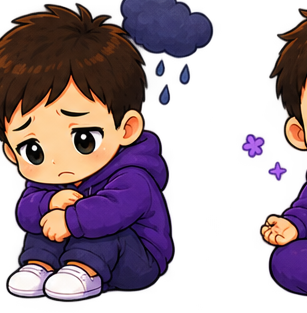
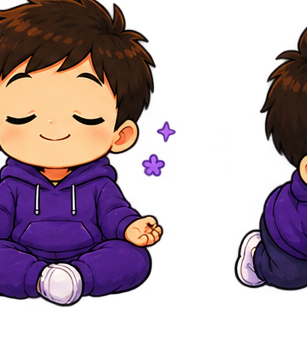
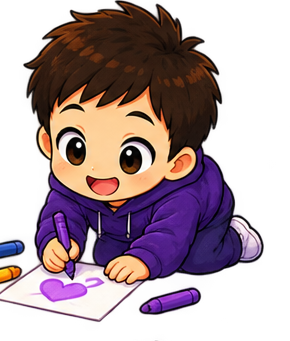

Psicología
Una mirada centrada en la persona, sus necesidades y su contexto.
La tecnología forma parte de la vida cotidiana. Por eso también puede formar parte de una conversación psicológica útil, cercana y sin prejuicios.

Mi objetivo es crear un espacio en el que niños, adolescentes y familias puedan entender qué está pasando, adquirir herramientas y avanzar paso a paso.
Me interesa especialmente la intersección entre salud mental, desarrollo, videojuegos y tecnología: hábitos digitales, regulación emocional, diseño de recompensas, uso de pantallas y prevención.
“No se trata de demonizar la tecnología. Se trata de aprender a relacionarnos con ella.”

Samu Psicólogo Online · EspañaLa tecnología no es el enemigo. Es parte del entorno. Mi enfoque busca comprender qué función cumple y cómo podemos construir una relación más saludable con ella.
Una mirada centrada en la persona, sus necesidades y su contexto.
Comprender mecánicas, motivación, recompensas y hábitos digitales.
Acompañamiento para entender, prevenir y actuar sin culpabilizar.
Herramientas claras para construir mejores hábitos desde hoy.
Un espacio de acompañamiento y divulgación pensado para las situaciones en las que salud mental y tecnología se cruzan.
Quiero hablar contigo →Desarrollo, emociones, autoestima, hábitos y uso de pantallas.
Orientación para acompañar la tecnología con límites, presencia y diálogo.
Videojuegos, motivación, recompensas, diseño y prevención.
Comprender emociones y desarrollar recursos para gestionarlas.
Explora contenidos por temática. Esta zona está preparada para conectar artículos, lecturas, PDFs y otros recursos.
Las ilustraciones están preparadas como assets independientes para reutilizarlas en CTAs, artículos, tarjetas y futuras secciones.

Alegría
Reflexión
Emoción
Calma
CreatividadElige el canal que te resulte más cómodo.
Entenderla es el primer paso.